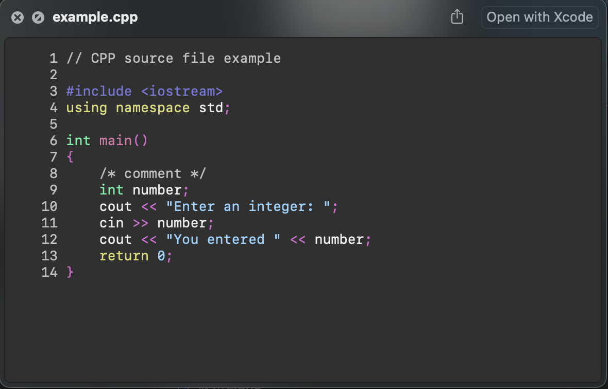
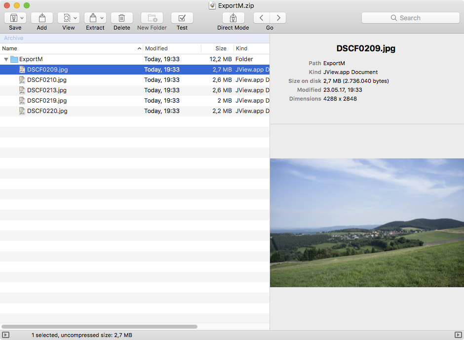
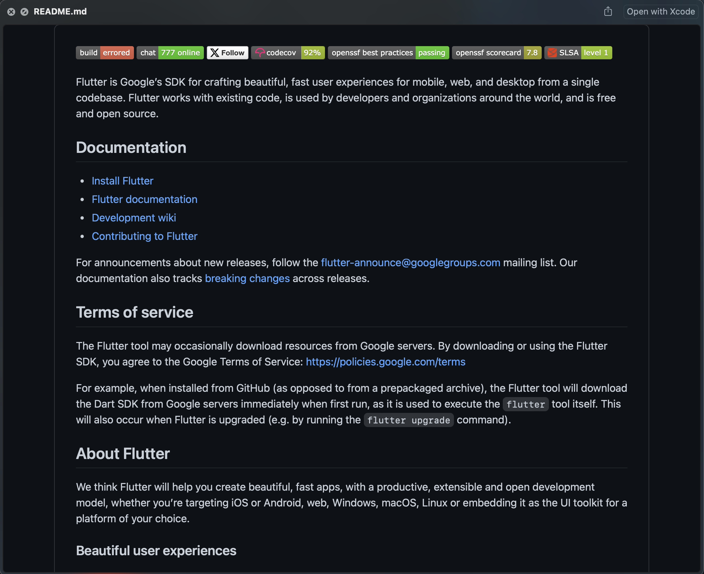

Mac预览插件推荐
文章目录
前言
用 Mac 的都知道，在文本、PDF、图片中按下空格就能够预览文件中的内容，不需要打开对应的程序，非常方便。
这项功能叫预览(QuickLook)，把隔壁用 Windows 的用户都给馋哭了。
不过默认的预览功能并不是很好用，比如我想要预览代码，如果不装额外的插件就之只能显示文本，没有语法高亮。
还有 JSON 、 Markdown 、 webp 、视频等等。
今天就来推荐几个好用的插件，增强预览功能。
syntax-highlight
 语法高亮插件，装上之后能够根据语言高亮代码，还能自己设置主题，渲染引擎
|
|
qlvideo
视频预览插件，不用打开播放器就能播放视频，默认的只支持 MPEG 封装格式的文件， qlvideo 支持 .asf, .avi, .flv, .mkv, .rm, .webm, .wmf 等格式
|
|
betterzip
 预览压缩文件的内容，不用解压就能看到压缩包里有哪些文件
|
|
quicklook-csv
预览 csv 文件
|
|
qlmarkdown

预览渲染好的 Markdown ，不再仅仅是文本
|
|
quicklook-json
带高亮预览 JSON ，还支持展开/折叠，方便查看数据。
|
|
参考
sindresorhus/quick-look-plugins: List of useful Quick Look plugins for developers